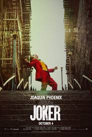

Ocean's Eleven

Date de sortie : 2001
Danny Ocean, fraîchement sorti de prison, a un plan ambitieux : réaliser le casse du siècle à Las Vegas. Son objectif ? Cambrioler simultanément les coffres-forts de trois des plus grands casinos de la ville (le Bellagio, le Mirage et le MGM Grand), tous appartenant au puissant Terry Benedict. Pour y parvenir, Danny réunit une équipe de 11 experts aux compétences variées : un pickpocket, un expert en explosifs, un acrobate, un faussaire, un hackeur, et d’autres spécialistes. Parmi eux : Rusty (son bras droit), Linus, Basher, Frank, et les frères Malloy. Mais ce n’est pas qu’une question d’argent : Tess, l’ex-femme de Danny, est maintenant la compagne de Benedict, ce qui rend l’affaire encore plus personnelle. Le film suit l’élaboration minutieuse du plan, les tensions au sein de l’équipe, et l’exécution spectaculaire du braquage, plein de twists et de manipulations brillantes.
Réserver la séancePirates des caribbes

Date de sortie : 2003
Dans les Caraïbes du XVIIIe siècle, la jeune Elizabeth Swann, fille du gouverneur, possède un médaillon mystérieux lié à une ancienne malédiction. Lorsqu’elle est enlevée par le redoutable Capitaine Barbossa et son équipage maudit à bord du Black Pearl, le forgeron Will Turner (qui l’aime en secret) se lance à sa rescousse. Pour la sauver, il s’allie à un pirate excentrique et rusé : le Capitaine Jack Sparrow, qui cherche à récupérer son navire, le Black Pearl, volé autrefois par Barbossa. Au fil de l’aventure, ils découvrent que l’équipage du Black Pearl est maudit : immortels, mais condamnés à vivre comme des squelettes la nuit. Pour briser la malédiction, ils doivent restituer tout un trésor aztèque volé… et verser le sang de celui qui l’a pris : Will, sans le savoir, est la clé de tout cela. Entre batailles navales, trahisons et répliques cultes, le film mélange humour, action et surnaturel.
Réserver la séanceJoker
Date de sortie : 2019